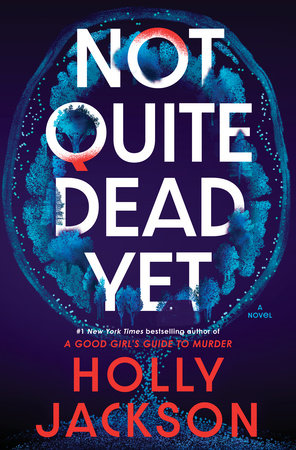

We Can Do Hard Things
-by Glennon Doyle, Abby Wambach and Amanda Doyle
"We Can Do Hard Things" offers 20 powerful reflections by Glennon Doyle, Abby Wambach, and Amanda Doyle—encouraging courage, connection, and resilience in the face of life's toughest questions.
Baking Across America
-by B.Dylan Hollis
In "Baking Across America", B. Dylan Hollis takes readers on a fun and flavorful vintage recipe road trip across the U.S., blending quirky stories with nostalgic bakes.
Not Quite dead Yet
-by Holly Jackson

"Not Quite Dead Yet" is Holly Jackson's gripping thriller that tests the boundary between life and death, truth and deception, perfect for fans of A Good Girl's Guide to Murder.
A Mother's Love
-by Danielle Steel
"A Mother's Love" by Danielle Steel is a heartfelt novel set against the romantic backdrop of Paris, exploring the deep emotional bond between a mother and her child.
The Possession of Alba Diaz
-by Isabel Canas
Isabel Cañas weaves gothic horror and passionate suspense in "The Possession of Alba Díaz", where love, mystery, and supernatural forces collide.